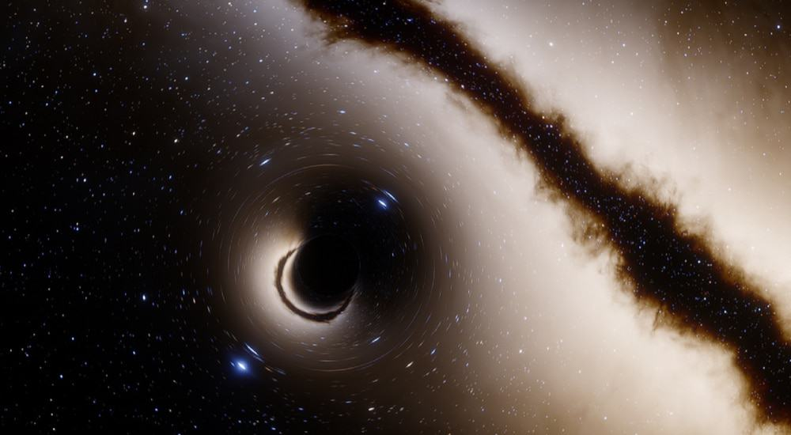

Buracos de minhoca são como túneis formados por grandes distorções no espaço-tempo. São frequentemente descritos pelos filmes e seriados de ficção científica como sendo capazes de nos levar para outros pontos do espaço e até mesmo do tempo. Entretanto, até hoje, nenhum buraco de minhoca foi observado, portanto, não sabemos se eles existem de fato. Além disso, a única coisa que sustenta a hipótese da existência dos buracos de minhoca é que tais estruturas são possíveis soluções das equações de Einstein que tratam da relatividade geral.
